Prompt references (v4.0) — pass these, in this order
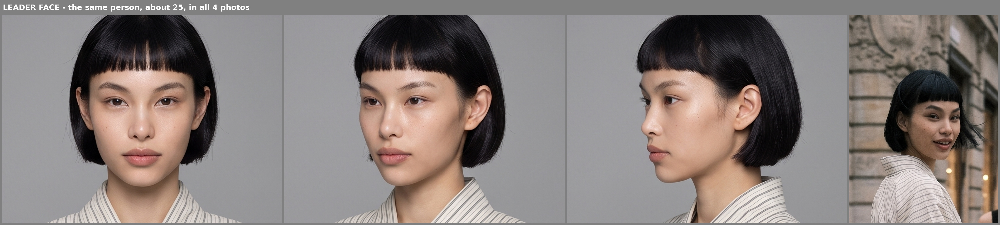
cast/leader_face.jpg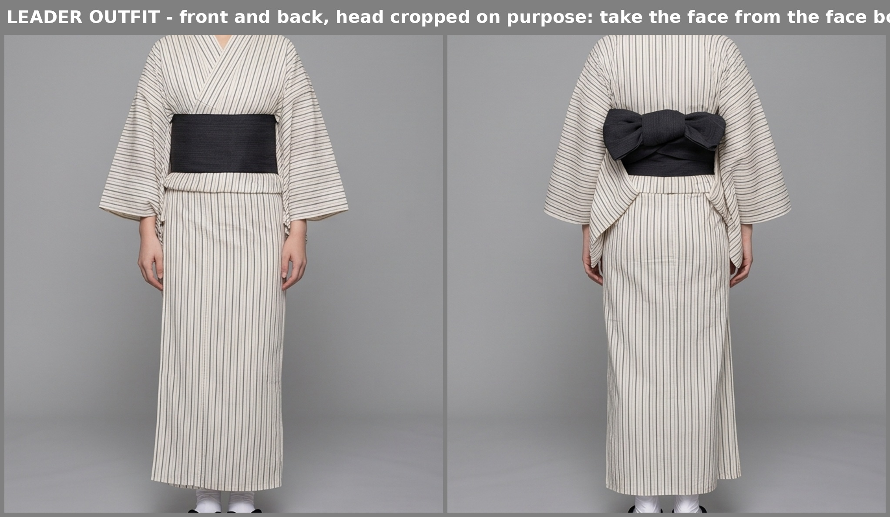
cast/leader_body.jpgcast/hero_face.jpg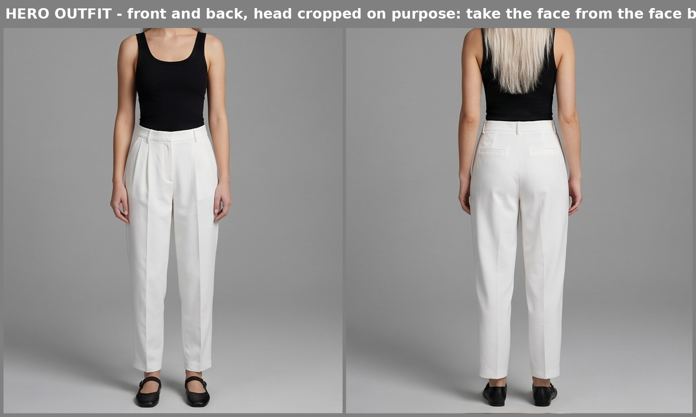
cast/hero_body.jpg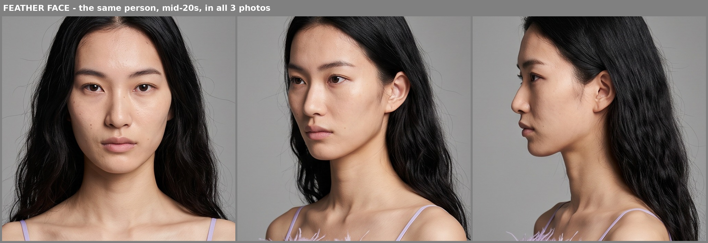
cast/feather_face.jpg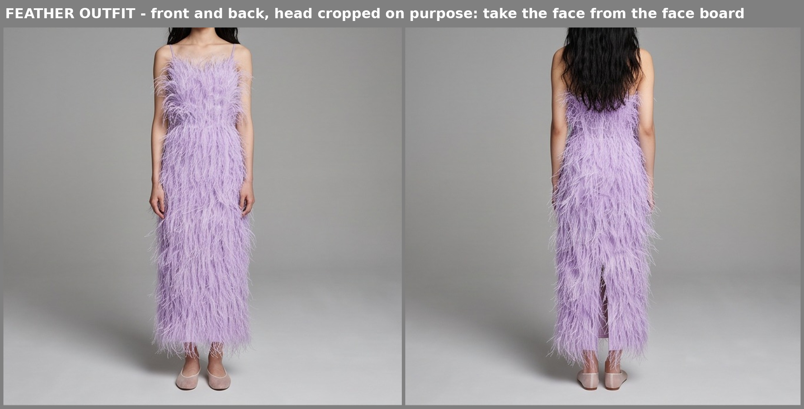
cast/feather_body.jpg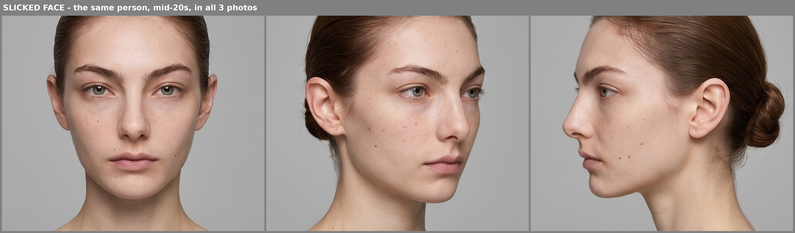
cast/slicked_face.jpg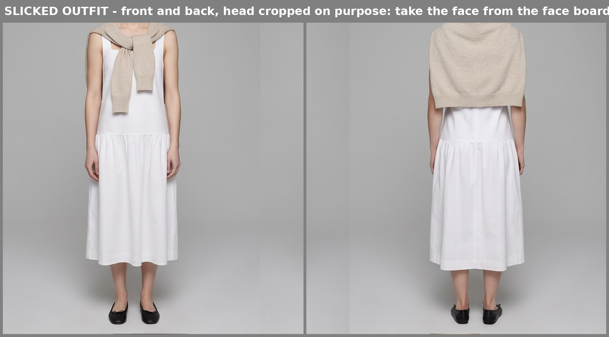
cast/slicked_body.jpg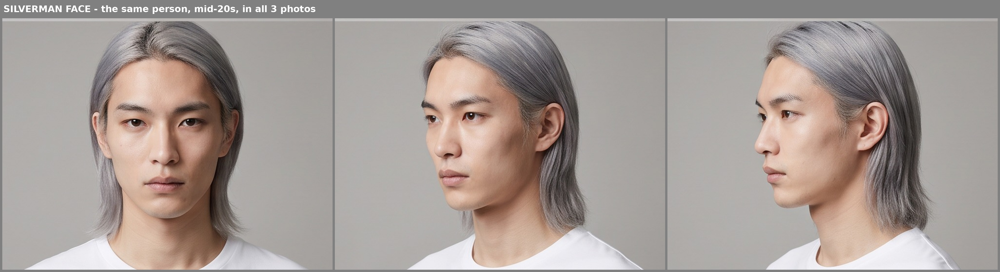
cast/silverman_face.jpg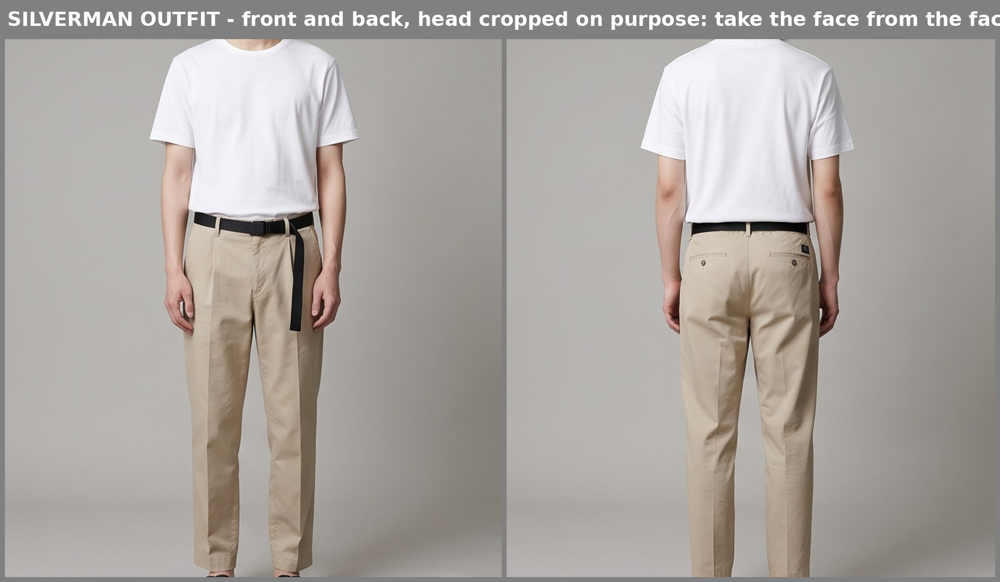
cast/silverman_body.jpg
plates/P-C2.jpg
blocking/shots/S2a.pngBlocking
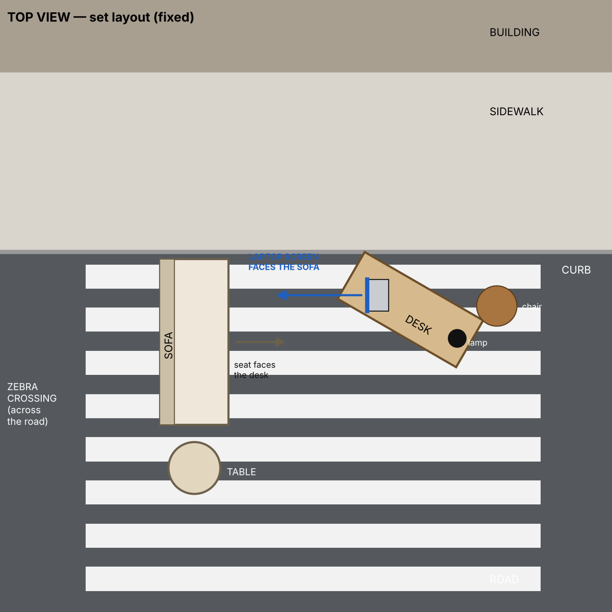
set_layout.png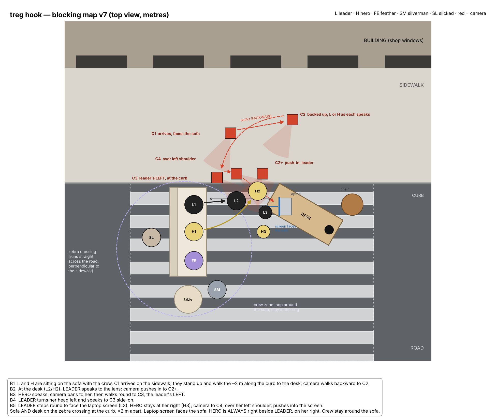
blocking_v7.png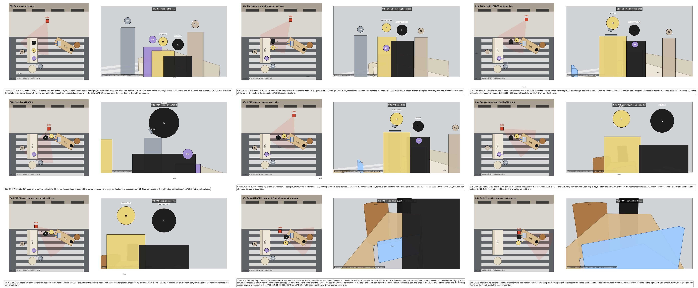
blocking/shots/Character sheets (review only — never in a prompt)
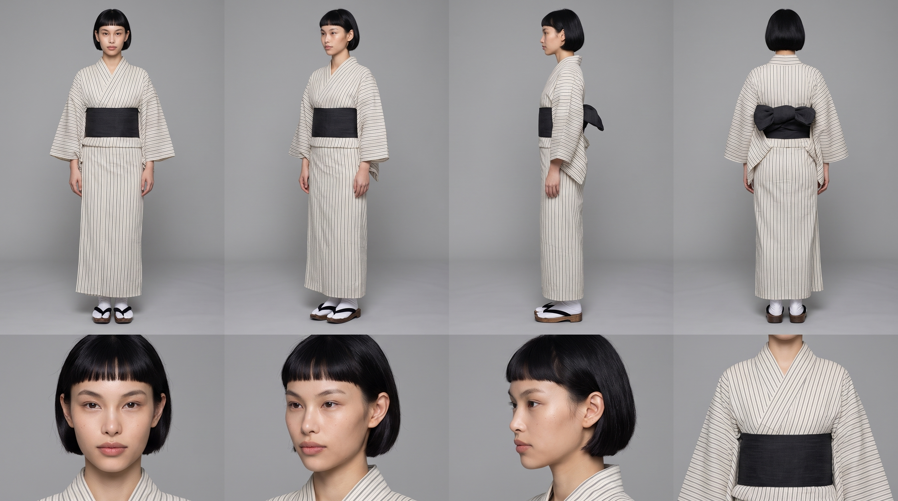
sheets/leader_bob_kimono.jpg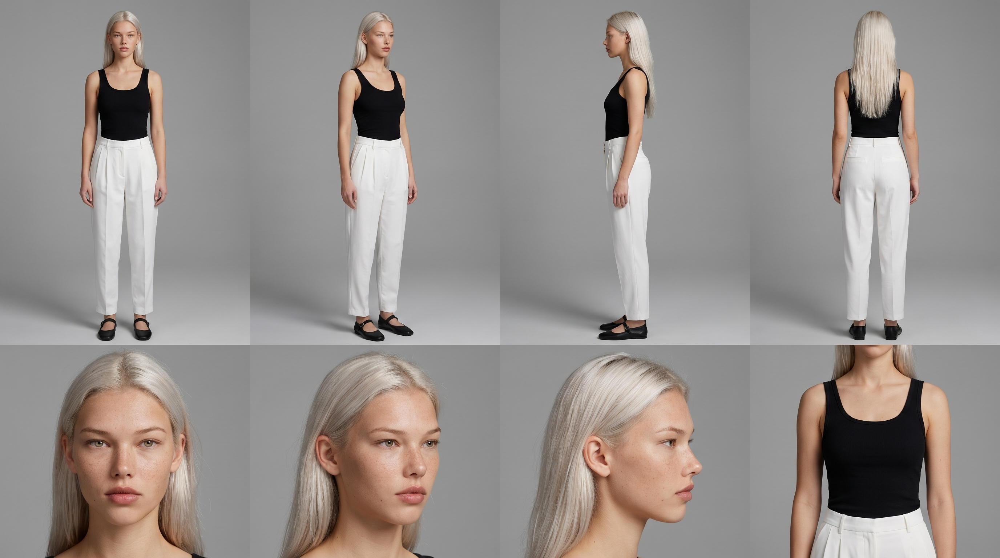
sheets/hero.jpg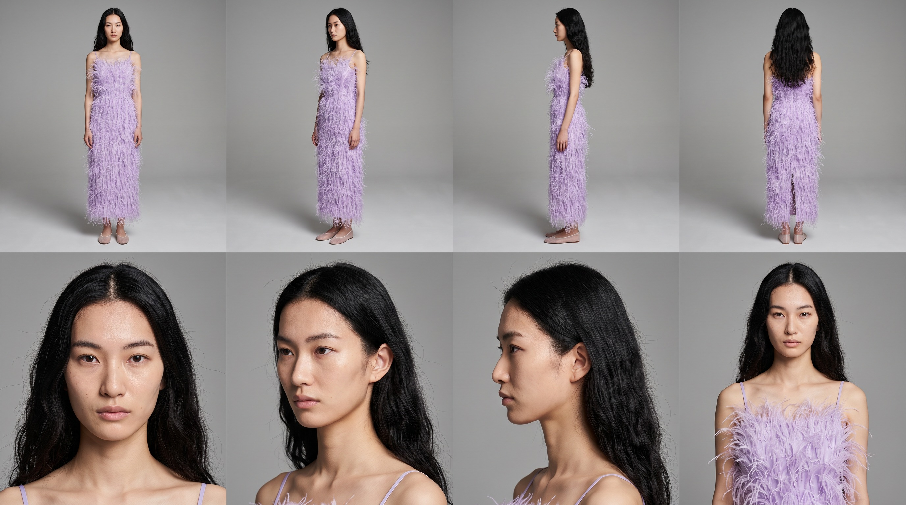
sheets/bg_feather_model.jpg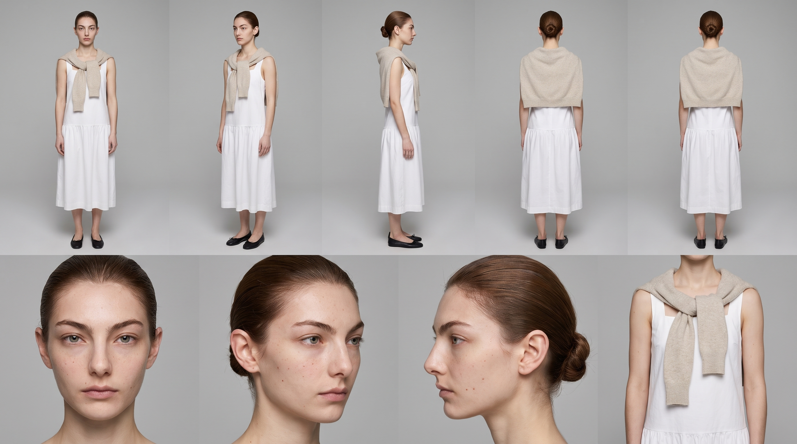
sheets/bg_slicked.jpg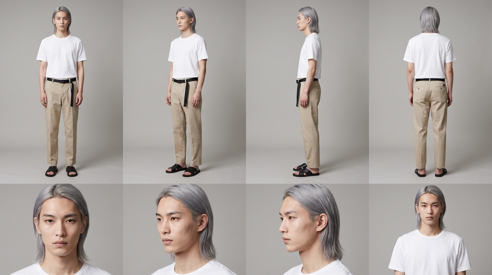
sheets/bg_silver_man.jpgSet
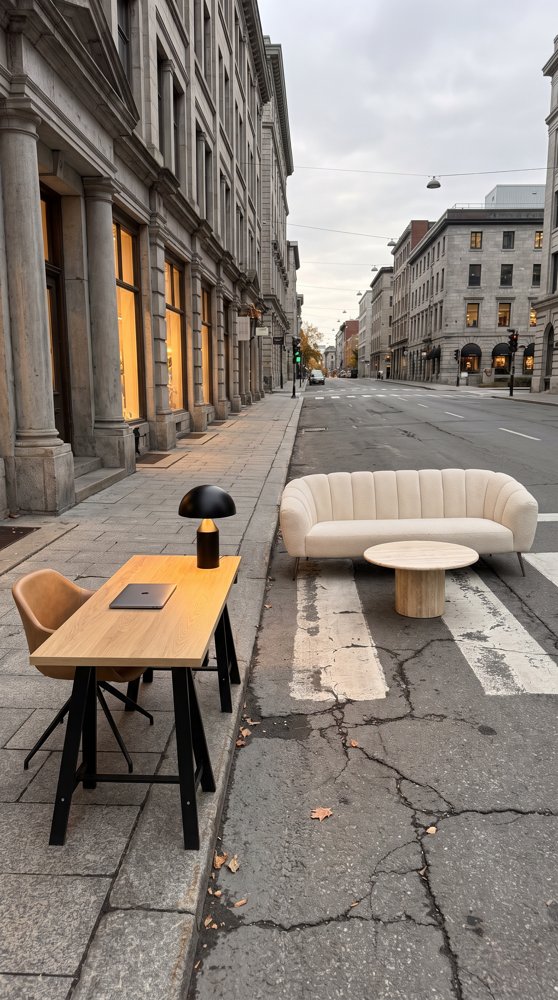
plates/p1_master.pngStill to add
| Asset | Status |
|---|---|
| Plate pA (desk-side curb, looking across the crossing) | To generate from p1 |
| Plate p3 re-roll (desk medium, matched to p1) | To generate from p1 |
| Voice takes (leader, hero, "How??") | Made in another session; not in this library yet |
| Magazine prop still ("3X CHEAPER") | Blocked on real prices |